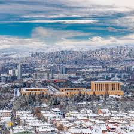

İstanbul, Türkiye'nin ekonomik, kültürel ve tarihî merkezini oluşturan en kalabalık şehridir.

İSTANBUL

ANTALYA
Antalya, Türkiye'nin Antalya ilinin merkezi olan şehirdir. Türkiye'de "turizmin başkenti" olarak görülür.

İZMİR
İzmir, Türkiye'de Ege Bölgesi'nde yer alan İzmir ilinin merkezi olan şehirdir.

ANKARA
Ankara, Türkiye'nin başkenti ve Ankara ilinin merkezi olan şehirdir. Aynı zamanda dünyada en büyük yüzölçümüne sahip olan başkenttir.